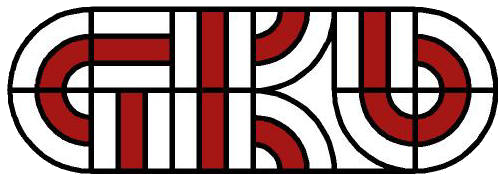

Schulbusfahrten
Ein Taxi ist ein öffentliches Verkehrsmittel zur gelegentlichen Personenbeförderung, dessen Fahrer einen Personenbeförderungsschein benötigt und gegen Bezahlung nach Taxameter den Fahrgast direkt zum gewünschten Ziel befördert.
Mietwagen
Ein Taxi ist ein öffentliches Verkehrsmittel zur gelegentlichen Personenbeförderung, dessen Fahrer einen Personenbeförderungsschein benötigt und gegen Bezahlung nach Taxameter den Fahrgast direkt zum gewünschten Ziel befördert.
Taxi
Ein Taxi ist ein öffentliches Verkehrsmittel zur gelegentlichen Personenbeförderung, dessen Fahrer einen Personenbeförderungsschein benötigt und gegen Bezahlung nach Taxameter den Fahrgast direkt zum gewünschten Ziel befördert.
Linienfahrten für die GKB
Ein Taxi ist ein öffentliches Verkehrsmittel zur gelegentlichen Personenbeförderung, dessen Fahrer einen Personenbeförderungsschein benötigt und gegen Bezahlung nach Taxameter den Fahrgast direkt zum gewünschten Ziel befördert.
